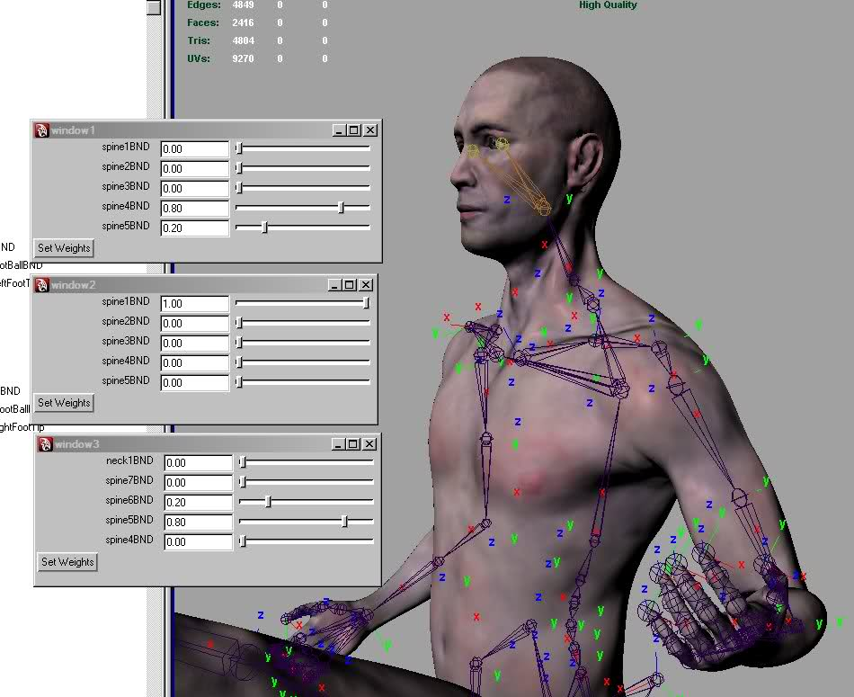

The windows you see there are for skinning. You select a few joints and then open the window, then you select verts and start setting weights. I like it a lot better than the component editor, which was apparently programmed by an insane robot. The nice part is having a bunch of them open and then trying out multiple weights and seeing how they look by scrubbing through your animations.
If anyone has suggestions to improve it, I'd appreciate them. I will eventually release it to public, along with two characters I am working on, male and female. Fully bound and rigged with (hopefully) easy to use controls based on driven keys. Only to C4 licensees, though, but unlike 99% of the 'free' stuff out there truly free for commercial use that falls under standard license (nongame, console, or big publisher release not allowed).
Ignore the strange skin tone, it's due to materials differences between packages. I will create shaders in C4 that make it look the way it did originally and/or adjust the texture itself.